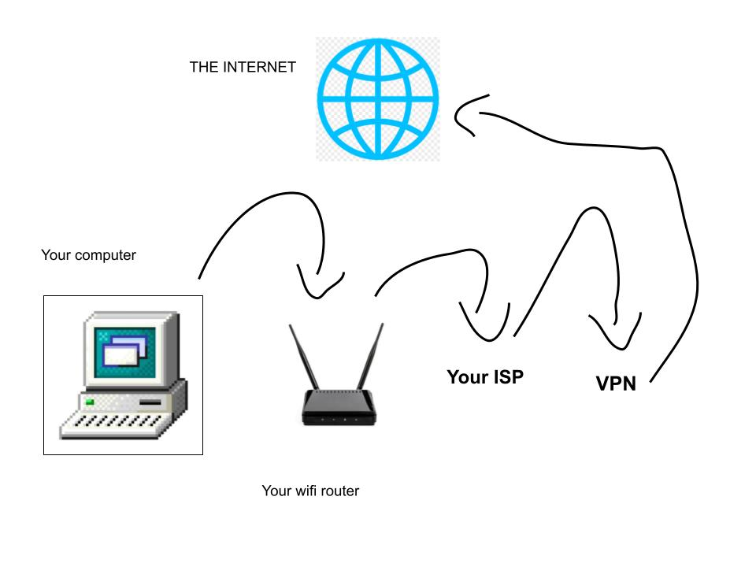

VPN stands for virtual private network. It keeps your internet browsing safe and secure by hiding your ip address and encrypting your data. Typically you use it by paying a subscription and connecting to their services. Why do you have to pay you ask? because internet resources aren't free!

So how does a VPN work? Usually when you connect to the internet, your computer sends a request to the wifi router in your house, which connects to whatever nearby internet service you're using. Then, that internet service fetches you the results of your request on the internet. When you use a VPN instead, the internet provider asks the VPN to fetch the data for it. The difference this makes is because your VPN should encrypt your data going out to the internet. Think of it as borrowing someone elses computer to go and search the internet for you instead of using your own computer. When big scary companies try to find your ip address and sell your data, they see the ip address of the VPN's computer instead! Another cool feature of VPNS is that they let you connect to their servers in other countries. This lets you view what websites look like in other places. For example, if you wanted to watch a movie on Netflix that's only available in Japan, you would connect to a server from your VPN in Japan.
-NordVPN
-Surfshark
-ProtonVPN
-ExpressVPN